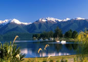

Information about New Zealand
New Zealand (or 'Aotearoa' - Maori for "Land of the long white cloud"), is a land of hidden treasures and vast, unspoilt beauty. At 269,000 square kilometres in area, New Zealand is a comparatively small country made up of 3 main Islands. The North, South and Stewart Islands. Similar in area to Great Britain, It lies 2000 kms east of Australia, north of Antarctica in the south western pacific.
Why Visit New Zealand?
The advantage New Zealand has over any other country is that it boasts having virtually all of Natures attractions in one small package. So, when visiting New Zealand, you can do and see more things in a week (by car, bus, motorhome or train), than in any other country. Why? Because New Zealand has everything from warm, sun-drenched beaches to cold snow capped mountains and glaciers. You can walk up the side of active volcanoes, swim with dolphins and be captivated by endless valleys of rain forest. You will be awe-inspired by the impressive fiords of the Deep South west and staggered by the wild and rugged beauty of the west coast. All these attractions are no more than a few hours drive from each other. From huge sweeping mountains and rivers to tranquil, Glacier-fed lakes, when visiting New Zealand, your Itinerary is only restricted by your timetable and imagination. The only complaint visitors have about their NZ holiday is that they haven’t set aside enough time. Along with it’s beauty, New Zealand is also a great place to visit for people seeking adventure and an adrenaline rush. The adventurous can try dozens of activities including Bungee Jumping, rock climbing, skiing, Snow boarding, windsurfing, hang gliding, sky diving, parachuting, river rafting, jet boat riding, mountain climbing, jet skiing, cave-rafting, mountain biking, fishing, kayaking and much more.
For more general information about New Zealand, visit either the Kiwi Site or Wikipedia.